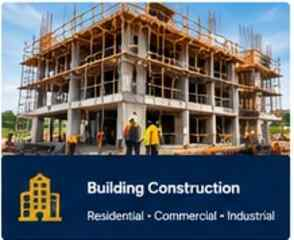

01CONSTRUCTION
Building Construction
Residential and commercial buildings, renovations, structural works and finishing.
Discuss construction →TW&D Engineering Consult & Services Ltd delivers integrated engineering, construction, property development and real estate solutions — from project conception, design and planning to execution and handover.
WHAT WE DO
Our company profile describes a multi-disciplinary approach spanning civil, building, electrical and mechanical works, housing, property development and real estate.

01CONSTRUCTION
Residential and commercial buildings, renovations, structural works and finishing.
Discuss construction →INFRASTRUCTURE
Roads, drainage, earthworks, concrete works, pipelines and civil infrastructure.
Discuss civil works →ENGINEERING
Electrical installation, distribution, lighting, maintenance and power systems.
Discuss electrical works →BUILDING SERVICES
Water supply, sanitary systems, drainage, piping and related installations.
Discuss plumbing →ADVISORY
Design coordination, project management, site supervision and technical support.
Discuss consultancy →REAL ESTATE
Real estate consultancy, land and property acquisition, housing and development services.
Discuss property →ABOUT THE COMPANY
TW&D Engineering Consult & Services Ltd evolved from building projects into a professional construction and development company. The company profile records its establishment in November 2017 to bring key multi-disciplinary contributors together under one roof.
Today, the business provides a coordinated professional construction service covering project conception, design, sourcing, infrastructure, professional-team coordination, construction and final handover, alongside housing, property development and real estate activities.
OUR APPROACH
Our company profile highlights good planning, organised work, continuous supervision, efficient scheduling of materials and equipment, accident prevention, timely quality control and trained workers and managers.
SELECTED PROJECT RECORD
Projects listed in the company profile include residential buildings, school construction, renovation, roofing and plumbing, and restoration works.
WORK EXECUTED • CLIENT PROJECT
Client: Air Vice Marshal Adekunle Clayton
Client project record for a 6-bedroom duplex at Idi-Ishin, Jericho, Ibadan, Oyo State. This client-specific work is presented separately from the general project record for clearer reference.
Additional location referenced: Tiger Mini Estate, Ojo Barracks, Ibadan, Oyo State.
LEADERSHIP & PROFESSIONAL TEAM
Engr. Adedayo Abiola Adegboye is the founder and corporate executive. The company profile also records a multi-disciplinary team and professional associates.
FOUNDER & CORPORATE EXECUTIVE
Founder of TW&D Engineering Consult & Services Ltd. The founder is a registered engineer with COREN and NSE, as stated by company management, and leads a team that includes several registered engineers and technical professionals.
HAVE A PROJECT OR PROPERTY NEED?
Construction, engineering, development or real estate — tell us what you are planning.
CONTACT TW&D
Share your project scope, location and requirements. Our team can begin with a professional consultation.
Send your project or property requirements directly to our WhatsApp line. Include location, type of work, approximate size, budget range if available, and any drawings or photos.
Send Enquiry ↗